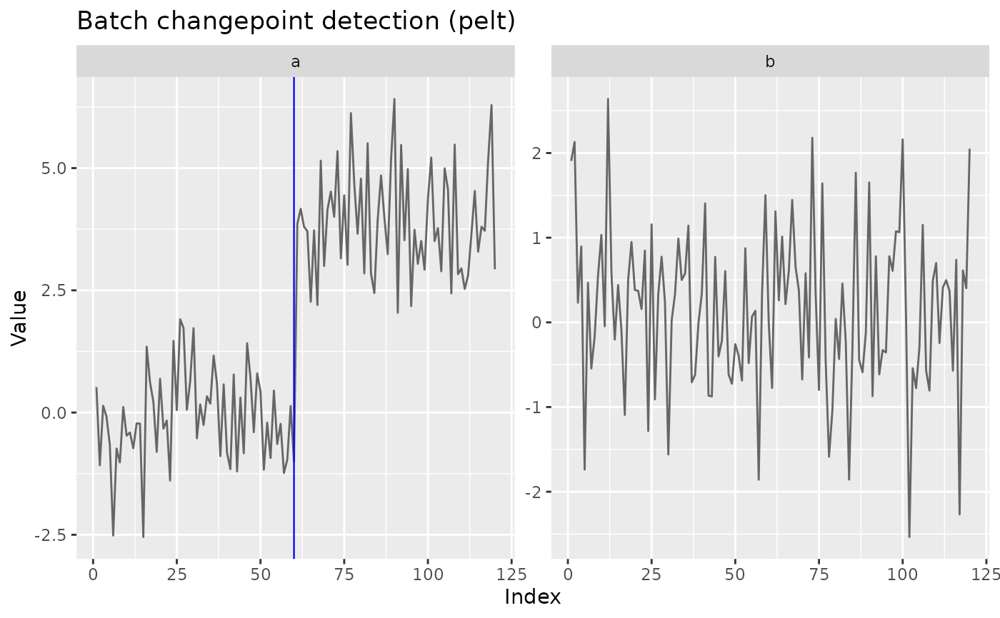

Runs one detector over every series in a collection — the panel-data loop
that methodological and applied work both need constantly. Accepts a
matrix/data frame (one column per series) or a named list of numeric
vectors. Honours future::plan() for parallel execution when the
future.apply package is available, with parallel-safe RNG.
Arguments
- x
For
cpt_batch(), a numeric matrix or data frame (columns are series) or a list of numeric vectors; for theprint()andtidy()methods, aggcpt_batchobject.- method
Detection method, passed to
cpt_detect().- change_in
What to detect change in, passed to
cpt_detect().- seed
Optional seed for reproducible parallel execution (passed to
future.apply::future_lapply()asfuture.seed; applied viaset.seed()when running sequentially).- ...
Additional arguments passed to every
cpt_detect()call.- object
A
ggcpt_batchobject (forautoplot()).
Value
A ggcpt_batch object: a tibble with one row per series and
columns series, n_changepoints, changepoints (a
list-column of tidy tibbles), and result (a list-column of
ggcpt objects). Methods: print(), tidy() (one row
per changepoint across all series), and autoplot() (faceted
small-multiples with each series' changepoints).
Examples
set.seed(2026)
X <- cbind(a = c(rnorm(60), rnorm(60, 4)), b = rnorm(120))
batch <- cpt_batch(X, method = "pelt")
batch
#> ggcpt_batch (2 series, method: pelt)
#>
#> # A tibble: 2 × 2
#> series n_changepoints
#> <chr> <int>
#> 1 a 1
#> 2 b 0
tidy(batch)
#> # A tibble: 1 × 3
#> series cp cp_value
#> <chr> <int> <dbl>
#> 1 a 60 -0.999
ggplot2::autoplot(batch)
